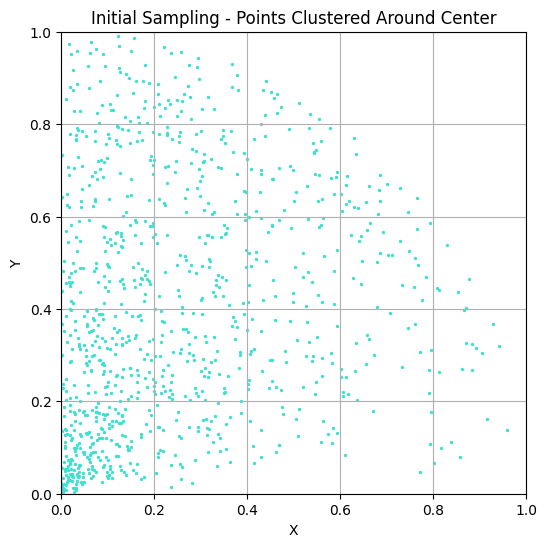

import matplotlib.pyplot as plt
import numpy as np
# Number of points to sample
num_points = 1000
# Arrays to store the sampled points
x_points = []
y_points = []
for _ in range(num_points):
r = np.random.uniform(0, 1)
x = np.random.uniform(0, r)
y = np.sqrt(r**2 - x**2)
x_points.append(x)
y_points.append(y)
# Plotting the points
plt.figure(figsize=(6, 6))
plt.scatter(x_points, y_points, color='turquoise', s=2)
plt.xlim(0, 1)
plt.ylim(0, 1)
plt.xlabel('X')
plt.ylabel('Y')
plt.title('Initial Sampling - Points Clustered Around Center')
plt.grid(True)
plt.show()